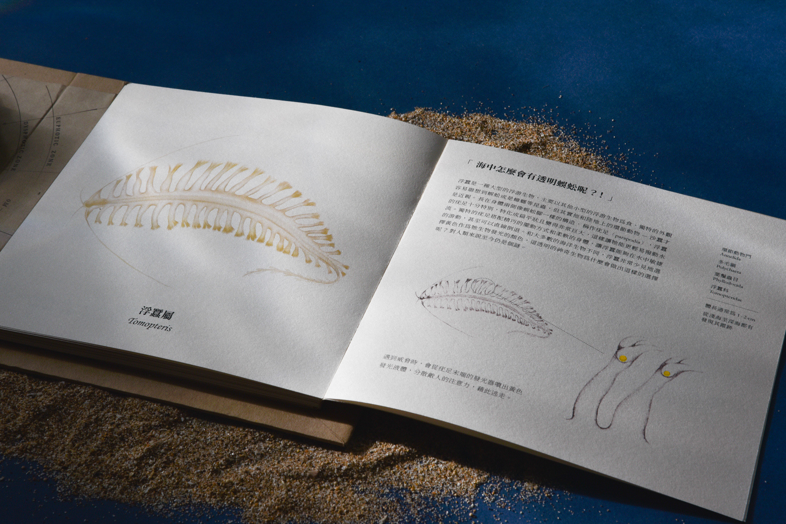
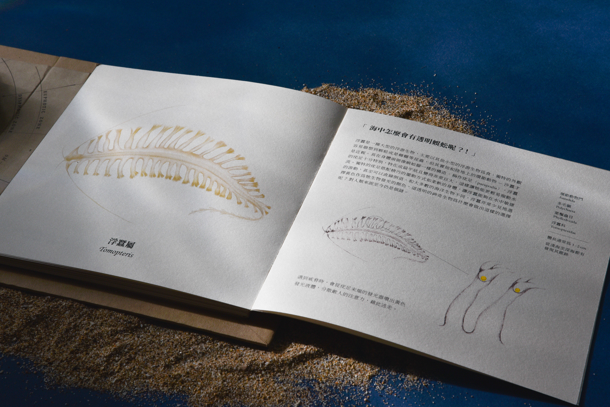
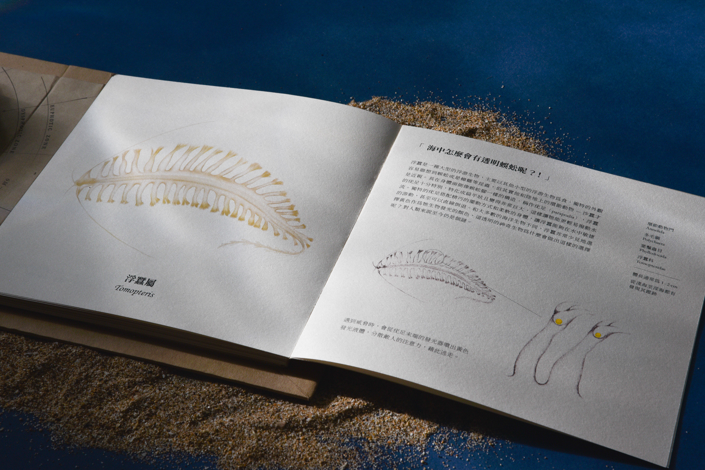

The ocean covers most of the earth's surface, but humans know little about it. According to the research, three-fourths of sea creatures can glow but few people know that. Therefore, we design a book that introduces luminous marine creatures,
which brings readers to this mysterious and stunning inner space.
To simulate the experience of undersea exploration, this book contains an interactive structure and luminous printing, making readers dive into this luminous world. The field
guide can be used at the same time as well. Readers can recognize these amazing creatures while exploring.
Books, Software (Procreate, Illustrator), Silk Screen Printing With Luminous Ink, Paper, Electronic Device
Book size 18 ✕ 18 cm, 60 ✕ 18 cm while open
| TYPE | Graphic Design, Book Design | ||||||
| DEPARTMENT | Commercial Design | ||||||
| +DESIGNER(S) | Huang, Ya-Yun & Lin, Sung-Yueh & Kao, Yu-Chun |
| Huang, Ya-Yun |
A native Taipeier. To experience wonderful things is my motivation for life. Therefore, I love to travel which makes me feel energetic again. I would never be satisfied with the same small place, Taipei, so I will go around the world one day. CONTACTyaadolphin@gmail.com |
| Lin, Sung-Yueh |
From Taichung Taiping, 22 yrs old, male.
CONTACTlinsyroc0923@gmail.com |
| Kao, Yu-Chun |
Born in Taipei in 2000. When I forget my age, I can find out the answer by just knowing what year it is. However, forgetting what year it is happens more often to me. Being a 22nd graduate in the department of design at the age of 22. Trying hard to become a good, warm designer and hoping to find my own sparkle. Please make me into a cat in my next life. CONTACTmelody950110@gmail.com |
| ADVISOR(S) | Lai, Chung-Ping / Hank |
